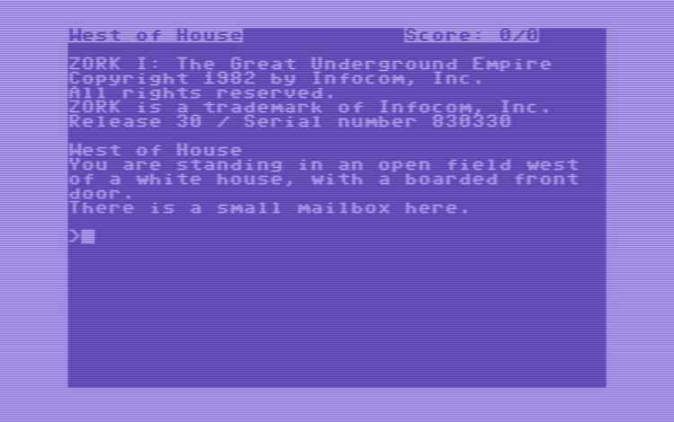

The Ontology of Quendor
The above image shows an example of a story file (zcode) being executed by a Z-Machine interpreter. This execution of zcode is what Quendor aims to do. Understanding the Z-Machine architecture and how zcode programs run is essential to explaining how Quendor will operate.
What is Quendor Going to Be?
Let's start with this statement: Quendor is a TypeScript-based ZIP implementation that allows for the emulation of the Z-Machine. Great. But what does that mean? Let's break it down a bit.
The goal of Quendor is to be an emulator. Any emulator's goal is to execute the binary files from some specific machine directly. Let's consider another retro-gaming example. Atari 2600 cartridges contained binary files that were the instructions for how the game would play once the cartridge was plugged into a console.
What you see in that above image is actual Atari 2600 with the use of a tool called ROM Scanner. This device lets you use multiple cartridges at a time and select which one to play. Each cartridge contains code that makes up the logic of the game program, stored in binary. That binary can be pulled out of those cartridges and stored as a binary file, usually called a ROM. You can build an Atari 2600 emulator that can take one of those binary files and execute it as if it were running on an Atari 2600.
What that above image shows you is a game being played in a virtual Atari 2600, with the portion of the screen to the left showing the contents of the binary file. Those are the instructions of the game. The portion of the screen to the right shows the game being played just as it would have been had the binary been in a cartridge and had that cartridge been plugged into an actual Atari 2600 console.
What I just described there applies to any machine, such as a Gameboy or a PlayStation or whatever else. The binary files that execute on these machines are always assembly-level instructions. So what does that mean for Quendor?
- The machine to be emulated is the Z-Machine.
- The binary files to be executed are called story files that contain zcode.
Unlike the binary files for the Atari 2600, the story files in question never ran on a machine's actual processor. Instead, they ran on a virtual machine, and it was this virtual machine that ran on the actual processor. So, as an example, a (virtual) Z-Machine might be running on an (actual) Commodore 64 or an (actual) Apple II. Here's the Zork 1 zcode running on an actual Commodore 64.
And here's the same zcode running on a Commodore Amiga.
And, just for good measure, the exact same zcode running on an Apple II.
It's All About Emulation
All of the above means that the Z-Machine was never a physical computing device made of circuits; thus, it was never physical hardware. The Z-Machine was instead a virtual computing device that had to be implemented in software. That's one part of what Quendor needs to be. Quendor needs to be able emulate a Z-Machine.
Just as the binary files for the Atari 2600 were made up of assembly instructions for graphical games, the story files I'm referring to are made up of assembly instructions for text adventure games. These text adventure games and the Z-Machine on which they ran were created by Infocom back in the late 1970s and through most of the 1980s.
In the case of the Atari 2600, the binary files were written directly in 6502 assembly language. In the case of the story files, the assembly instructions are actually a compiled form of z-language, which was more often known as ZIL (Zork Implementation Language). This compiled assembly code is referred to as z-machine code or just zcode.
In fact, this is a form of code known as bytecode, which is code that makes up an instruction set designed to be run on a particular interpreter. This is identical to the concept of Java bytecode, which is the instruction set for code that can run on a Java Virtual Machine (JVM) via a Java Runtime Engine (JRE). The language used to create the bytecode doesn't necessarily matter. For example, you can compile Java, Groovy, or Clojure programs, which all produce bytecode that runs on the JVM. Similar to Microsoft's .NET implementation of the Common Language Runtime (CLR) that can execute compiled C#, F#, and VB.NET.
The same applies in this context. Someone can compile a story file using a tool like ZILF, Dialog, or Inform and as long as those tools produce the appropriate bytecode, that bytecode will run on the Z-Machine.
But It's Also About Interpretation
Thus, a "Z-Language Interpreter" or a "ZIL Interpreter" is basically designed to execute the instruction set of the zcode, which was, in turn, intended to be executed on a Z-Machine (virtual) processor. What language was used to create that zcode is mainly irrelevant.
Quendor will be one of those interpreters, a type of ZIP. A ZIP (Z-Language Interpreter Program) was a program, or rather a series of programs, written by Infocom. Infocom referred to their own interpreters by the following designations:
- ZIP (versions 1 to 3)
- EZIP / LZIP (version 4) ("extended" or "expanded")
- XZIP (version 5) ("experimental")
- YZIP (version 6) ("successor to X")
There was apparently a version called GZIP (Graphical ZIP). This particular ZIP was used for a one-off project from Infocom called Fooblitzky. That game was intended to be a multiplayer strategy game quite different from the text adventures for which most ZIPs were designed.
Based on surviving notes from the company, Infocom did think about the possibility of an interpreter capable of running all versions. "One interpreter to rule them all," so to speak. It's unknown how far they took this idea, but they didn't release such an interpreter, at least so far as anyone has found.
The point is that each ZIP was a program that emulated the hardware instruction set specified for the Z-Machine. Even though the Z-Machine was never actually hardware, its operation basics were just like any processor that communicated with input and output devices and performed operations via instructions.
Starting Concepts
Here are a few starting points that are crucial to understand:
- The Z-Machine is a virtual computer.
- The machine language of the Z-Machine is called zcode.
- There are six Infocom versions of the Z-Machine.
- There are two Inform versions of the Z-Machine.
- The structure and operation of zcode can differ between the versions.
In the above, "Inform" refers to a development system that was created to allow for compiling text adventures down into a bytecode format that could be read by the Z-Machine. Many saw this tool as the successor to the Infocom compiler known as ZILCH.
That image comes from the 2014 Game Developers Conference, specifically the talk by Dave Lebling called "Classic Game Postmortem: Zork". You can also see a write up of that presentation.
The Z-Machine was originally a closed proprietary technology. The implementation of this machine, although not its general existence, was guarded closely by Infocom since this provided their competitive advantage over all other rivals at the time. It was essentially their "secret sauce." In the early to mid-1990s, when it was clear that Infocom was dissolving and would be no more, various people tried to reverse engineer what made the Infocom games work.
Regarding those versions, the Z-Machine specification says:
Eight Versions of the Z-machine exist, and the first byte of any "story file" (that is: any Z-machine program) gives the Version number it must be interpreted under.
You can think of these versions as emulations of the architecture. Consider how Apple released the Apple I (1976), Apple II (1977), Apple III (1980), and Apple Lisa (1983). Each of these was effectively an evolution of a processing architecture. The same applies to the Z-Machine versions, even though that architecture was entirely virtual.
The Z-Machine specification also tells us something quite important.
The design's cardinal principle is that any game is 100% portable to different computers: that is, any legal program exactly determines its behaviour.
In this context, a legal program refers to a program that adheres to the Z-Machine specification. The specification defines how the Z-Machine should behave, including how it should interpret and execute the instructions provided by zcode programs.
By stating that any legal program exactly determines its behavior, the specification emphasizes that the behavior of a zcode program running on the Z-Machine is entirely determined by the zcode program itself, according to the rules defined in the Z-Machine specification. This means that a zcode program should behave the same regardless of the computer or operating system it's running on, as long as the Z-Machine implementation is correct and adheres to the specification.